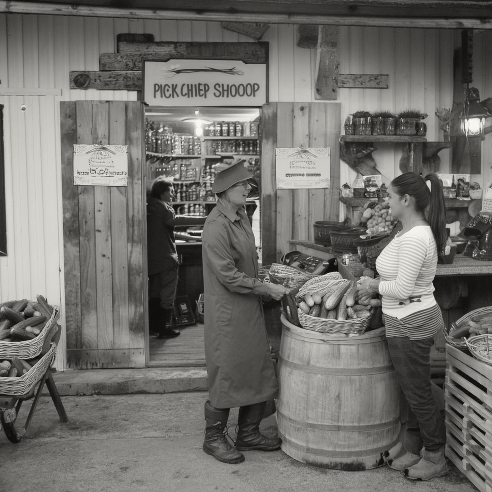

About Us
Our story began with a love for pickles and a desire to bring high-quality, handcrafted pickles to our community. We pride ourselves on using only the finest ingredients and time-honored recipes to create pickles that are both delicious and unique.
At The Pickle Shop, we believe that great pickles start with great ingredients. That's why we source our produce from local farmers who share our commitment to quality and sustainability. From classic dill to spicy habanero and sweet bread and butter, we offer a wide range of flavors to suit every palate.
Visit us at:
The Pickle Shop1234 Vine Street
Springfield,IL 496001
USA
Our mission is simple: to provide our customers with the best pickles they've ever tasted. Whether you're a pickle aficionado or trying them for the first time, we guarantee you'll find something you love at The Pickle Shop. Come visit us and taste the tradition, savor the flavor, and discover your new favorite pickles!